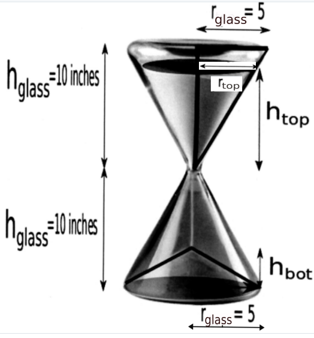

7.6. Related Rates and Volumes#
Introduction
Along with max/min problems, related rates problems are one of the main applications introduced in calculus. The idea of related rates is that if two or more variables are related to each other (eg. radius \(r\) and area \(A\) of a circle), and one of the quantities is changing with time (for example, the radius \(r(t)\) of a pond ripple may be expanding at a rate of \(\frac{dr}{dt} = 1 ft/sec\)) than the other variable will also be changing with time (the area enclosed by the circular ripple is also changing with time.) Knowing the formula relating the area \(A\) to the radius \(r\), namely
we may find the relationship between \(\frac{dA}{dt}\) and \(\frac{dr}{dt}\) uing the chain rule:
Thus, for example, at the instant the radius of the ripple is \(r=10\), we can find the rate of change of the area:
Example
Suppose sand is emptying from a conical hourglass in such a way that the height of the sand \(h_{top}\) in the top part is decreasing at a rate of \(2\, in/min\). Assume the sand flows smoothly and forms a conical pile in the bottom part, how fast is the height \(h_{bottom}\) of the bottom conical pile increasing if the height of the sand in the top cone is 8 inches and the height of the sand in the bottom cone is 4 inches?
{kind=link}
Solution.
Let \(r_{top}\) be the radius of the top conical pile of sand. Note by similar triangles
so we deduce that \(r_{top}=\frac{1}{2} h_{top}.\)
The volume of the top conical pile of sand is
Substituting the relationship obtained in step 1), we have
Differentiating with respect to \(t\) the last equation relating \(V_{top}\) and \(h_{top}\), we obtain
Using the given information \(h_{top}=8\, in\) and \(\frac{dh_{top}}{dt}=-2 \, in/min\), we find
Under the assumption that all the sand on top flows smoothly to the bottom conical pile, we have
Note that
Differentiating the last equation with respect to \(t\) gives
Substituting the value in Step 5, we find
7.6.1. Exercise#
Exercise
In the following problem, we will outline the steps used to analyze a hypothetical scenario where coffee drips from a filter in the shape of a right circular cone into a pot in the shape of a right circular cylinder. The radius of the filter and cylinder are both 3 inches and the height of the filter is 6 inches. If the level of the coffee in the cylindrical pot is rising at the constant rate of 1 inch per minute, how fast is the height of the coffee in the filter decreasing when the coffee in the filter is 5 inches deep?
On the diagram below, label the radius (3 in) of the filter and cylinder and the height (6 in) of the filter. Also, label the radius \(r_{cone}\) and height \(h_{cone}\) of coffee in the filter, and also the height \(h_{pot}\) of coffee in the pot.
{kind=link}
Using similar triangles, express the radius \(r_{cone}\) in terms of the height \(h_{cone}\).
Use your answer to problem 2 to give a formula for the volume \(V_{cone}\) of coffee in the filter in terms of \(h_{cone}\).
Find the derivative \(\frac{d}{dt} [V_{cone}]\) assuming that \(h_{cone}\) is a functions of time \(t\).
Give a formula for the volume \(V_{pot}\) of coffee in the pot in terms of \(h_{pot}\).
Find the derivative \(\frac{d}{dt} [V_{pot}]\) assuming that \(h_{pot}\) is a function of time \(t\).’
Give an equation that relates your answers to problem 4 and problem 6.
Answer the question posed at the beginning.
What assumption(s) have we made in analyzing this coffee pot?